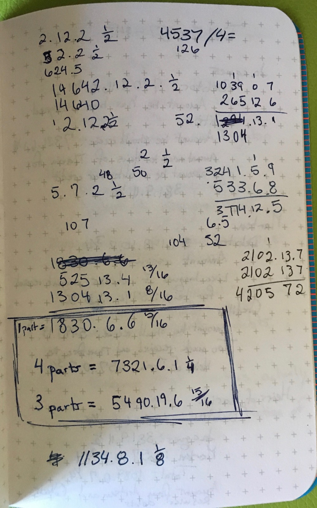

# Install CRAN release
install.packages("debkeepr")
# Install development version
# install.packages("pak")
pak::pak("jessesadler/debkeepr")debkeepr: An R package for the analysis of non-decimal currencies
debkeepr is now on CRAN
rstats
debkeepr
debkeepr is an R package for the analysis of historical non-decimal currencies and double-entry bookkeeping. Version 0.1.1 is debkeepr’s first release on CRAN.

debkeepr is now—finally—on CRAN with version 0.1.1! debkeepr integrates non-decimal currencies that use tripartite or tetrapartite systems into the methodologies of Digital Humanities and the practices of reproducible research. The package makes it possible for historical non-decimal currencies, such as the tripartite system of pounds, shillings, and pence (£465 12s. 8d.), to behave like decimalized values through the implementation of the deb_lsd, deb_tetra, and deb_decimal vector types. These types are based on the infrastructure provided by the vctrs package. The name of the package derives from its ability to analyze historical account books that used the system of Double-entry bookkeeping.
You can now install the released version of debkeepr from CRAN or the development version on GitHub:
Please open an issue if you have any questions, comments, or requests.
This release has been a long time coming. I first started to develop debkeepr in 2018 to deal with the problem of performing mathematical operations on non-decimal currencies of pounds, shillings, and pence that was crucial to my research on merchant families in the 16th and 17th centuries. I introduced the package with this blog post in September 2018. After talking to Hadley Wickham at the Tidyverse developer day at RStudio::conf 2019, I completely rewrote the package, using the vctrs package to develop fully integrated S3 vector types that could represent non-decimal currencies. I discussed this process at RStudio::conf 2020. Since then, I have been developing the package on and off, while also using it for my historical research.1 But I never quite got around to putting the package on CRAN. However, progress was made. I kept up with changes to vctrs and dplyr and added a new class for tetrapartite values: pounds, shillings, pence, and farthings. The forthcoming second edition of the R Packages book by Hadley Wickham and Jenny Bryan and the recently updated chapter on Releasing to CRAN helped motivate me to finally prep and submit the package for CRAN release. On 22 March 2023 version 0.1.1 of debkeepr was accepted on CRAN after one quite minor round of changes.
Usage
The debkeepr package introduces three new vector types—deb_lsd(), deb_tetra(), and deb_decimal()—to deal with two interrelated problems inherent in historical non-decimal currencies and other such value systems.
- Historical currencies consist of three or four separate non-decimal units.
- The bases of the shillings, pence, and optionally farthing units differed by region, coinage, and era.
The deb_lsd type maintains the tripartite structure of non-decimal currencies and provides a bases attribute to record the bases for the shillings and pence units. The deb_tetra type extends the concept of the deb_lsd type to incorporate currencies and other types of values that consist of four units. The deb_decimal type provides a means to decimalize both deb_lsd and deb_tetra types, while keeping track of the two or three non-decimal bases and the unit represented as attributes.2
library(debkeepr)
# Create deb_lsd, deb_tetra, and deb_decimal vectors
# with default bases of 20s. 12d.
# deb_lsd vector: £8 13s. 4d.
deb_lsd(l = 8, s = 13, d = 4)
#> <deb_lsd[1]>
#> [1] 8:13s:4d
#> # Bases: 20s 12d
# deb_tetra vector: £8 13s. 4d. 3f.
deb_tetra(l = 8, s = 13, d = 4, f = 3)
#> <deb_tetra[1]>
#> [1] 8:13s:4d:3f
#> # Bases: 20s 12d 4f
# deb_decimal: £8 13s. 4d. in decimalized shillings
deb_decimal(173.33, unit = "s")
#> <deb_decimal[1]>
#> [1] 173.33
#> # Unit: solidus
#> # Bases: 20s 12d
# Cast £8 13s. 4d. to a decimal form
deb_as_decimal(deb_lsd(8, 13, 4))
#> <deb_decimal[1]>
#> [1] 8.666667
#> # Unit: libra
#> # Bases: 20s 12dResources
debkeepr provides three vignettes and example data to help get started using the package.
- Getting Started with debkeepr vignette provides a thorough introduction to the package and the three
debkeeprvector types. - Transactions in Richard Dafforne’s Journal vignette goes through examples of financial and arithmetic calculations dealing with various currencies taken from the practice journal in Richard Dafforne’s Merchant’s Mirrour (1660), a 17th-century textbook for learning accounting practices.
- Analysis of Richard Dafforne’s Journal and Ledger vignette analyzes and visualizes the practice double-entry bookkeeping ledger from Dafforne’s Merchant’s Mirrour as found in the
dafforne_transactionsanddafforne_accountsdata provided indebkeepr.
The rest of this post will provide a quick overview of how debkeepr can assist historians in research involving non-decimal currencies and bring the study of historical account books into the practices of reproducible research.
Arithmetic with non-decimal currencies
Arithmetic with non-decimal currencies is cumbersome and error-prone, at least if you were not educated within non-decimal systems. The primary issue is the need to do compound unit arithmetic to normalize units according to their bases.
debkeepr types provide a way to access arithmetic operations and mathematical functions for non-decimal values, drastically simplifying these calculations. For instance, we can add together the values in Figure 2 with either + or sum().
# Add multiple deb_lsd vectors
deb_lsd(28, 15, 8) + deb_lsd(32, 8, 11) + deb_lsd(54, 18, 7) + deb_lsd(18, 12, 9)
#> <deb_lsd[1]>
#> [1] 134:15s:11d
#> # Bases: 20s 12d
# Sum of one deb_lsd vector
sum(
deb_lsd(l = c(28, 32, 54, 18),
s = c(15, 8, 18, 12),
d = c(8, 11, 7, 9))
)
#> <deb_lsd[1]>
#> [1] 134:15s:11d
#> # Bases: 20s 12dAddition and subtraction might be cumbersome with non-decimal values, but multiplication and division get tricky quite quickly. We can see this using examples from the article on Arithmetic in the third edition of the Encyclopedia Britannica, printed in 1797 and comparing these to the process with debkeepr types.
The Encyclopedia Britannica outlines the process for multiplying £15 3s. 8d. sterling by 32 and £17 3s. 8d. sterling by 75. It breaks down larger multiplication operations into smaller ones. Multiplying £15 3s. 8d. sterling by 32 becomes a matter of sequentially multiplying the monetary value by 8 and then by 4. Multiplying £17 3s. 8d. sterling by 75 is presented as a three step process of multiplying by 3, then by 5, and then 5 again as 3 * 5 * 5 = 75. With debkeepr you can use multiplication as you would any other numeric vector.
# Multiply £15 3s. 8d. sterling by 32
deb_lsd(15, 3, 8) * 32
#> <deb_lsd[1]>
#> [1] 485:17s:4d
#> # Bases: 20s 12d
# Multiply £17 3s. 8d. sterling by 75
deb_lsd(17, 3, 8) * 75
#> <deb_lsd[1]>
#> [1] 1288:15s:0d
#> # Bases: 20s 12d
The process for division presented in the Encyclopedia Britannica might bring you back to grade school and long division problems, though the operation also includes multiplication due to the need to convert between units. The Encyclopedia shows the division of £465 12s. 8d. sterling by 72 and 345 hundredweight 1 quarter 8 lbs by 22. This latter example provides an opportunity to demonstrate how you can use the bases argument in debkeepr-type vectors to adapt them to other value systems besides the default of 20 shillings to the pound and 12 pence to the shilling. In this case, there are 4 quarters in a hundredweight and 28 pounds in a quarter. This example also gives proof of the gains in accuracy, as the answer is shown as 15 cwt. 2 q. 21 lb., but it should actually be 22 lb.3 Note too that the output of debkeepr types shows the bases of the vectors: # Bases: 4s 28d.
# Divide £465 12s. 8d. sterling by 72
deb_lsd(465, 12, 8) / 72
#> <deb_lsd[1]>
#> [1] 6:9s:4.111d
#> # Bases: 20s 12d
# Divide 345 hundredweight 1 quarter 8 lbs by 22
deb_lsd(345, 1, 8, bases = c(4, 28)) / 22
#> <deb_lsd[1]>
#> [1] 15:2s:22d
#> # Bases: 4s 28d
The example of dividing a measurement of weight also provides an opportunity to use the deb_tetra type that allows for four units, here hundredweight, quarters, stones, and pounds. We can, thus, rewrite the value to be divided as 345 cwt. 1 q. 0 st. 8 lb.
# Divide 345 cwt. 1 q. 0 st. 8 lb. by 22
deb_tetra(345, 1, 0, 8, bases = c(4, 2, 14)) / 22
#> <deb_tetra[1]>
#> [1] 15:2s:1d:8f
#> # Bases: 4s 2d 14fFor many more examples, including how to work with vectors of different types and different bases see the Getting Started with debkeepr vignette and the Transactions in Richard Dafforne’s Journal vignette.
debkeepr and double-entry bookkeeping
The ability to treat non-decimal values of three (deb_lsd) or four (deb_tetra) units as numeric vectors greatly simplifies analysis of these types of values. However, it is the integration of debkeepr types in data frame columns—particularly in the form of what debkeepr refers to as transaction data frames—that makes it possible to bring the analysis of historical account books recorded in various non-decimal currencies into the practices of Digital Humanities and reproducible research. debkeepr provides a methodology to enter data from historical account books and create deb_lsd or deb_tetra columns with deb_gather_lsd() and deb_gather_tetra() respectively. These data frames can then be analyzed and visualized using methods such as those provided by the tidyverse, particularly with dplyr and ggplot2.
set.seed(240)
# Raw data of a transaction data frame
# Input each unit of non-decimal currency as separate column
raw_data <- data.frame(
id = 1:5,
credit = c(1, 3, 2, 2, 3),
debit = c(3, 2, 1, 3, 1),
l = sample(20:100, 5),
s = sample(1:19, 5),
d = sample(1:11, 5)
)
raw_data
#> id credit debit l s d
#> 1 1 1 3 24 6 10
#> 2 2 3 2 34 12 5
#> 3 3 2 1 83 2 4
#> 4 4 2 3 41 5 9
#> 5 5 3 1 92 11 11
# Create deb_lsd column
deb_gather_lsd(raw_data,
l = l, s = s, d = d,
lsd_col = lsd, replace = TRUE)
#> id credit debit lsd
#> 1 1 1 3 24:6s:10d
#> 2 2 3 2 34:12s:5d
#> 3 3 2 1 83:2s:4d
#> 4 4 2 3 41:5s:9d
#> 5 5 3 1 92:11s:11ddebkeepr includes two data frames of example data. dafforne_transactions is a transactions data frame that has columns for transaction id, credit account, debit account, date of the transaction, and the value of the transaction as a deb_lsd column with bases 20s. and 12d., along with some addition information. This is paired with a data frame containing information about the 46 accounts in Dafforne’s practice ledger. See ?dafforne_transactions and ?dafforne_accounts for more details. For a fuller discussion of using these data frames, see the Analysis of Richard Dafforne’s Journal and Ledger vignette.
# Load tidyverse packages
library(dplyr)
library(ggplot2)
# Transactions data frame
dafforne_transactions
#> # A tibble: 177 × 8
#> id credit debit date lsd journal ledger description
#> <dbl> <dbl> <dbl> <date> <lsd[20s:12d]> <dbl> <chr> <chr>
#> 1 1 2 1 1633-01-01 1000:15s:7d 1 1/1 Various coins of…
#> 2 2 2 3 1633-01-01 477:10s:0d 1 1/1 60 Leeds dozens …
#> 3 3 2 4 1633-01-01 55:0s:6d 1 2/1 5 barrels that r…
#> 4 4 2 5 1633-01-01 240:0s:0d 1 2/1 For 800 French c…
#> 5 5 2 6 1633-01-01 229:0s:0d 1 2/1 2290 guilders re…
#> 6 6 2 8 1633-01-01 3:17s:8d 1 3/1 Expenses for the…
#> 7 7 7 2 1633-01-01 150:0s:0d 1 1/2 Ready money from…
#> 8 8 9 11 1633-01-04 360:0s:0d 1 4/3 100 Leeds dozens…
#> 9 9 1 9 1633-01-04 144:0s:0d 2 3/1 For 2/5 of the 1…
#> 10 10 5 10 1633-01-04 120:0s:0d 2 3/2 400 French crown…
#> # ℹ 167 more rows
# Accounts data frame
dafforne_accounts
#> # A tibble: 46 × 5
#> id account ledger investor description
#> <int> <chr> <int> <chr> <chr>
#> 1 1 Cash 1 Ego Account fo…
#> 2 2 Stock 1 Ego Account of…
#> 3 3 Wares 1 Ego Account fo…
#> 4 4 Kettles 2 Ego Account fo…
#> 5 5 Jean du Boys - account current 2 Jean du … Factor in …
#> 6 6 Jacob Symonson - account by him in company 2 Jacob Sy… Aggregatio…
#> 7 7 Jacob Symonson - account current 2 Jacob Sy… Current ac…
#> 8 8 Jacob Symonson - Cochineal 3 Jacob Sy… Sale of co…
#> 9 9 George Pinchback 3 George P… Account wi…
#> 10 10 Jacob Symonson - ready money 3 Jacob Sy… Account of…
#> # ℹ 36 more rowsdebkeepr provides a set of functions that work with data frames with the same structure as dafforne_transactions. deb_account_summary() is useful for obtaining an overview of the account book at its closing, providing a summary of the total credits, debits, and current value of each account.
dafforne_transactions |>
deb_account_summary(credit = credit, debit = debit, lsd = lsd)
#> # A tibble: 46 × 4
#> account_id credit debit current
#> <dbl> <lsd[20s:12d]> <lsd[20s:12d]> <lsd[20s:12d]>
#> 1 1 1956:10s:11d 2903:13s:0d -947:-2s:-1d
#> 2 2 2006:3s:9d 150:0s:0d 1856:3s:9d
#> 3 3 570:0s:0d 570:0s:0d 0:0s:0d
#> 4 4 75:0s:8d 75:0s:8d 0:0s:0d
#> 5 5 813:3s:0d 813:3s:0d 0:0s:0d
#> 6 6 568:1s:11d 869:2s:7d -301:0s:-8d
#> 7 7 2958:18s:10d 2958:18s:10d 0:0s:0d
#> 8 8 1580:10s:0d 1580:10s:0d 0:0s:0d
#> 9 9 1744:1s:4d 1744:1s:4d 0:0s:0d
#> 10 10 606:2s:6d 606:2s:6d 0:0s:0d
#> # ℹ 36 more rowsWe can present this information in a line-range plot in which the upper range represents the total credit, the lower range the total debit, and a point for the current value. This also allows an opportunity to point out some limitations of the deb_lsd and deb_tetra vector types; ggplot2 currently does not know how to pick a scale for deb_lsd and deb_tetra columns. However, deb_decimal columns work as expected. It is therefore necessary to cast the deb_lsd or deb_tetra columns to deb_decimal with deb_as_decimal(), either before or within the ggplot() call.4 For a line-range plot we also need to turn the debit column into negative values.
# Plot summary of accounts
dafforne_transactions |>
mutate(lsd = deb_as_decimal(lsd)) |>
deb_account_summary() |> # Columns have default names of credit, debit, and lsd
mutate(debit = -debit) |>
ggplot() +
geom_linerange(aes(x = account_id, ymin = debit, ymax = credit)) +
geom_point(aes(x = account_id, y = current,
color = if_else(current == 0, "Closed", "Open"))) +
scale_color_manual(values = c(Open = "black", Closed = "blue")) +
scale_y_continuous(labels = scales::label_dollar(prefix = "\u00a3")) +
labs(x = "Accounts",
y = "Pounds sterling",
color = "Status",
title = "Summary of the accounts") +
theme_light()debkeepr and reproducibility

The above plot only scratches the surface of the possibilities for exploring and analyzing account books that use historical non-decimal currencies with debkeepr. The Transactions in Richard Dafforne’s Journal vignette provides additional examples. Yet, what I think is the most significant about debkeepr is not any one plot, time saving feature, or type of analysis, but rather the possibility of using the practices of reproducible research in the context of historical economic data. Individual calculations are easier to track and validate when written in code rather than scrawled out on a scratch piece of paper or entered into a calculator. Even more importantly, debkeepr provides a workflow for entering data from account books into a data base, tidying the data, and then exploring, analyzing, and visualizing the data in ways that integrate with the tidyverse and more general practices of data analysis in R.
I have seen this in my own work on the accounts of the estate of Jan della Faille de Oude. Without debkeepr the process of transcribing the over 2,100 transactions and analyzing the 480 accounts appeared to have limited use for quite a bit of work. Instead, I picked a handful of crucial accounts and worked by hand. With debkeepr the effort becomes worthwhile and whole plethora of research questions and ways to communicate were opened up. It is my hope that debkeepr can help bring to light crucial and interesting social interactions that are buried in economic manuscripts, making these stories accessible to a wider audience.
Footnotes
For instance, in my talk, “Rough Estimation: Inheritance, Accounting, and Sibling Rivalry in an Early Modern Merchant Family.” See the video and/or slides.↩︎
debkeepruses the nomenclature of l, s, and d to represent pounds, shillings, and pence units in non-decimal currencies. The abbreviations derive from the Latin terms libra, solidus, and denarius. It uses the default of 20 shillings to the pound and 12 pence to the shilling that became ingrained in much of Europe during the Carolingian Empire in the 9th century. However, a variety of other bases also developed over time, and so these bases can be modified by the user using thebasesargument.↩︎Checking the long division at the bottom of the calculation, 22 goes into 44 twice not once.↩︎
The only context in which casting to
deb_decimalresults in any loss of information is in labeling the plotted values. However, this can be rectified throughdeb_text(), which provides a flexible way to formatdebkeeprtypes as text.↩︎